Операционная система
(ОС, OS, operating system) — это набор программ, обеспечивающих работу компьютера или другого устройства и взаимодействие с ним пользователя.
Компоненты операционной системы
Операционная система представляет собой многослойную структуру, в центре которой находится ядро. Поверх него располагаются драйверы и службы, а оболочкой выступает пользовательский интерфейс.
Ядро
Это основа операционной системы. Ядро представляет собой часть программного обеспечения, работающую напрямую с компонентами компьютера. Также оно отвечает за управление процессами, памятью компьютера, файловой системой, обработку входных и выходных данных.
Ядра бывают монолитными и модульными. В первых все инструменты, необходимые для работы, находятся внутри одной программы. Например, такое ядро использовалось в DOS. Но сейчас монолитных ядер почти не осталось, так как все операционные системы перешли на модульную архитектуру.
В модульном ядре все компоненты разделены на небольшие блоки, которые работают независимо друг от друга. Такая структура более стабильна, так как ошибки в одном компоненте не приводят к остановке всей системы. ОС с модульными ядрами в свою очередь бывают двух видов: с микроядрами, как, например, QNX и Symbian, и монолитные с подгружаемыми модулями — Windows и Linux.
Драйверы
Это программное обеспечение, благодаря которому операционная система работает с подключённым в устройстве «железом». Без драйверов она не узнает, что могут делать видеокарта, клавиатура, принтер и другие комплектующие и как правильно отправлять к ним запросы.
Пользовательский интерфейс
Бывает графическим (GUI) и командным (CLI).
Графический интерфейс (GUI) представляет собой визуальную среду с кнопками, иконками, меню и диалоговыми окнами. Именно он используется по умолчанию в Windows, macOS, Android, iOS и средах рабочих столов Linux.
Командный интерфейс (CLI) использовался в DOS, а сейчас реализован в виде терминала в Linux и macOS и командной строки в Windows, в которых пользователь вводит команды с клавиатуры. CLI даёт возможность гибко управлять системой, используя функции и скрипты. Его чаще всего используют разработчики и системные администраторы.
Виды операционных систем
Все существующие ОС можно классифицировать по нескольким признакам: разрядности, типу лицензии и области применения.
По разрядности
32-битные (x32). Адресуют до 4 ГБ оперативной памяти и могут запускать программы, написанные только под 32-битную систему.
64-битные (x64). Ограничение по оперативной памяти — до 16 ТБ. Такие ОС поддерживают 64-битные программы, а 32-битные запускают через эмулятор.
Все современные версии операционных систем на компьютерах и смартфонах являются 64-битными. 32-битные версии иногда используют в устройствах со слабым «железом».
По типу лицензии
Коммерческие. Это платные ОС, которые лицензируются за деньги. Как правило, у них закрытый исходный код, который принадлежит конкретной компании. Например, Windows от Microsoft или macOS от Apple.
Свободно распространяемые. Бесплатные для пользователей, но могут включать платную поддержку. Например, как у продуктов Red Hat или Canonical.
Такие ОС можно свободно скачивать, распространять и даже модернизировать под себя. Главный пример — Linux, вариантов которого насчитывается уже более 500.
По области применения
Серверные операционные системы используются на серверах. Они включают в себя инструменты для обмена данными между компьютерами через сетевые соединения. Такими ОС являются Windows Server и Unix-системы для серверов.
Клиентские — системы для использования на автономных компьютерах или устройствах, подключённых к серверам. К примеру, Windows 11, macOS 14.3 или Ubuntu Linux.
Мобильные операционные системы разработаны для смартфонов и планшетов. Они позволяют работать с мобильными приложениями, управлять настройками сотовой сети и энергопотреблением. К ним относят Android и iOS.
История развития операционных систем
История развития операционных систем насчитывает около 70 лет. За это время простейший набор заданий для мейнфреймов, написанный на перфоленте, эволюционировал в то, что сейчас мы видим на экране компьютера или смартфона.
Всю историю можно разделить на три этапа.
Первый этап (1955–1965 годы)
История операционных систем начинается в 1955 году, когда инженер General Motors Роберт Л. Патрик и программист North American Airlines Оуэн Мок разработали для IBM 704 GM-NAA I/O. Её иногда называли системой ввода — вывода.
GM-NAA I/O позволяла мейнфрейму автоматически выполнять задания по проведению сложных математических вычислений. Их результаты выводились на подключённый принтер. Благодаря этому операторы мейнфрейма могли проводить вычисления без постоянной смены специальных плат.
В 1964 году появилась ОС Multics, созданная совместными усилиями Мичиганского университета, General Electric и Bell Labs. В ней была реализована возможность параллельной работы нескольких программ, концепция виртуальной памяти и файловая система на основе дерева каталогов, используемые и сегодня.
Второй этап (1965–1980 годы)
В 1969 году в исследовательской лаборатории Bell Labs разработали ОС Unix. Она — основа современных операционных систем.
Unix поддерживала язык C и протокол TCP/IP. Это первая ОС, которую можно было установить на сервер. К ней могли подключиться компьютеры-клиенты, позволяя одновременно работать нескольким пользователям.
В 1973 году компания Xerox разработала первую операционную систему с графическим интерфейсом — Alto OS. В ней была реализована оконная система с различными типами элементов управления, такими как кнопки, поля ввода и списки.
Так как Alto OS работала только на компьютерах Xerox Alto, которые были дорогими, она использовалась только внутри самой компании Xerox и в некоторых университетах.
Третий этап (1980 — настоящее время)
В это время появляются персональные компьютеры, доступные не только корпорациям и университетам, но и обычным пользователям.
В 1984 году компания Apple выпускает первую систему для своих Macintosh под названием System 1, созданную на основе Alto OS. С её помощью Стив Возняк планировал избавить пользователей от сложности существующих ОС и вывести компьютеры компании на массовый рынок.
Microsoft старалась не отставать и в 1985 году выпустила Windows 1.0. Операционная система не была инновационной, а представляла собой графическую оболочку для MS-DOS, предыдущего продукта, созданного для компании IBM.
В 1991 году в игру включается независимый разработчик Линус Торвальдс. На основе Unix он создаёт собственную операционную систему Linux и выкладывает её в открытый доступ.
Так как исходный код Linux распространяется свободно, к развитию системы с самого начала подключается большое число независимых разработчиков. Но первая графическая оболочка для ОС GNOME появилась лишь в 1999 году.
Операционные системы для смартфонов развивались параллельно. С 1998 года разрабатывалась Symbian — ОС для Nokia, а с 1999 года — BlackBerry OS для BlackBerry от компании RIM.
Из современных мобильных операционных систем первой в 2007 году появилась iOS, созданная на ядре Linux компанией Apple.
Инноваций было немного: первый мультитач в мобильном устройстве, виртуальная клавиатура, синхронизация с iTunes и браузер Safari. Главное преимущество той iOS — стабильная работа благодаря разработке под один конкретный девайс.
Главным конкурентом iOS стала разработанная в 2008 году Android OS. Её выпустила компания Android Inc., которую позже приобрёл Google. Эта система также создана на ядре Linux, но распространяется с открытым исходным кодом.
Основное отличие Android от конкурентов — возможность кастомизации дизайна и настроек на любом устройстве. Первая версия ОС вышла на смартфоне HTC Dream.
Популярные операционные системы
С момента разработки первой операционной системы прошло больше 60 лет. Было выпущено огромное количество разных ОС, но к сегодняшнему дню популярность обрели продукты компаний-гигантов и модификации операционных систем с открытым исходным кодом.
Windows. Знакомая большинству операционная система с многолетней историей. Её главные преимущества — это дружелюбный интерфейс, обширная совместимость с программами, играми и периферией. Это сделало её самой популярной системой среди пользователей ПК и ноутбуков. Но она является платной, закрытой и требовательной к «железу».
macOS — ОС для Macbook и iMac. Компания Apple постаралась над архитектурой своей «оси» и максимально оптимизировала её под используемые комплектующие. В первые годы macOS преимущественно выбирали специалисты творческих профессий — видеомонтажёры, журналисты и другие, — но сейчас многие покупают устройства компании из-за их стабильной работы и личных предпочтений к дизайну.
Любителям тонкой настройки операционной системы и инструментов с открытым исходным кодом подойдут бесплатные Linux-подобные ОС. В них удобно администрировать серверы, работать с базами данных и вообще делать всё то же самое, что и в Windows и macOS.
Android распространяется с открытым исходным кодом. Большое количество компаний разрабатывают на его основе собственные интерфейсные оболочки для своих Android-смартфонов.
Такие преимущества ОС, как понятное управление, возможности широкой настройки интерфейса, большой магазин приложений, завоевали «Андроиду» популярность у производителей мобильных устройств и других портативных гаджетов.
iOS устанавливается только на мобильные устройства от Apple. Вместе они образуют единую экосистему, что является одновременно и плюсом, и минусом. Сами по себе они работают быстро и стабильно, отлично синхронизируясь с другими гаджетами компании. Но при взаимодействии со сторонними ОС могут возникать ошибки. Система является закрытой, поэтому кастомизировать её не получится, а приложения можно установить только из официального магазина — App Store.
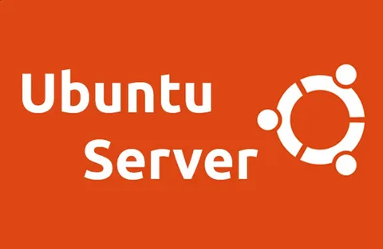
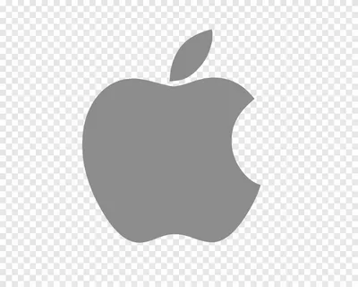
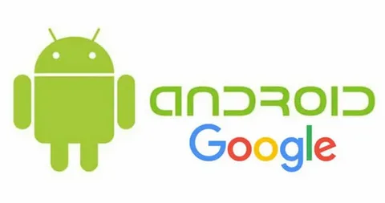
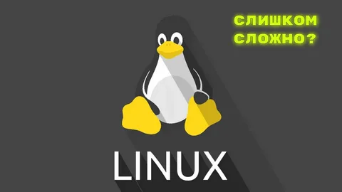
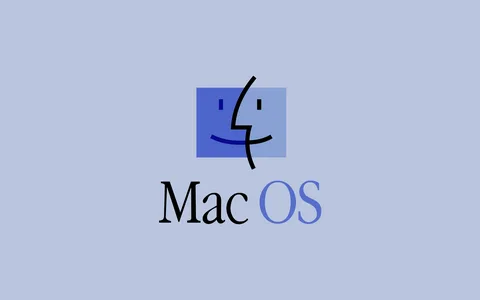
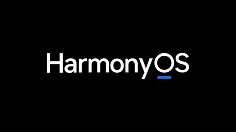
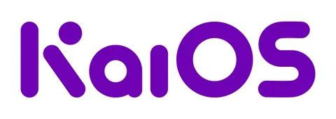
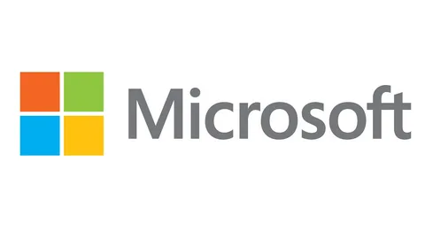
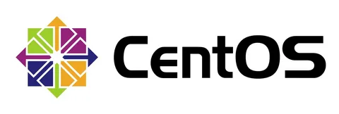
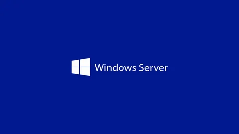
Любой работающий компьютер есть связка четырёх типов программного обеспечения: операционная система, программы и приложения, драйверы и BIOS.
Компоненты Windows, или из чего Windows состоит
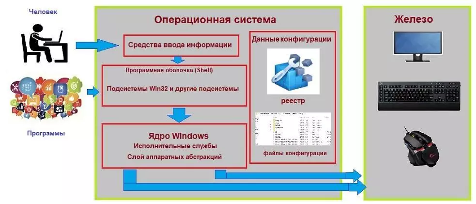
Программная оболочка = Shell:
Это часть операционной системы, которая завязана и с пользователем и с приложениями. Именно шелл позволяет нам запускать флешки, устанавливать программы, запускать word-вый документ и печатать в нём, сохраняя в любое дозволенное системой место, которое заметно проводнику. Shell – это и File Explorer (проводник Windows), и контрольная панель Пуск, и окна Свойства системы и Мой компьютер. Человек или пользователь знает шелл как различные инструменты пользовательского интерфейса, такие как диалоговые окна, ярлыки и иконки, контекстные меню дополнительных команд.
А для программ шелл это команды и процедуры, которые эти программы могут вызывать: печать информацию через принтер, читать данные из баз, отображать что-то на экране.
Сам шелл состоит из нескольких подсистем, которые управляются в пользовательском режиме. Такой режим означает, что эти подсистемы имеют очень ограниченный доступ к системной информации, и доступ к “железу” может осуществляться ТОЛЬКО через системные службы (службы самой Windows). Одна из таких подсистем – подсистема безопасности Win32 – обеспечивает вход в систему (регистрацию пользователя), сохранение и распространение его привилегий на файлы и папки, а также другие функции безопасности. Абсолютно все программы и приложения “здороваются с Windows” только через подсистему Win32.

Ядро
Как и в других ОС, отвечает за работу с оборудованием, которое внутри компьютера находится или во время работы к компьютеру “пристёгивается”. Режим ядра полномочий имеет гораздо больше. Никакая программа, установленная в Windows, не имеет доступа к “железу” напрямую – только через шелл, который, в свою очередь, посылает все запросы к ядру. Такая система взаимодействия обеспечивает стабильную работу ОС. Это чем-то напоминает ресторан: перед тем как заказать блюдо, вам нужно позвать официанта (к шеф-повару и на саму кухню вас не пропустят).
Ядро состоит из двух компонентов:
слой аппаратных абстракций HAL – hardware abstraction layer – (ближайший к железу уровень)
уровень исполнительных служб (обеспечивает взаимодействие подсистем в пользовательском режиме со слоем аппаратных абстракций)
Данные конфигурации
Ну, а всем операционным системам нужно место, где данные о программах и оборудовании, а также настройках и предпочтении пользователя можно хранить. Нужно хранить информацию и о том, как пользователь хочет, чтобы Windows и программы выглядели, где хранить скачиваемое и создаваемое и т.д. Для всего этого (или для почти всего) Windows использует … правильно, реестр. Некая информация хранится в файлах инициализации (характерные файлы с расширением .ini и .inf).
И когда установленная программа запускается, перед появлением какого-либо окна она сначала посмотрит реестр и прочитает эти файлы, и только потом уже запуск приложения можно считать успешным.
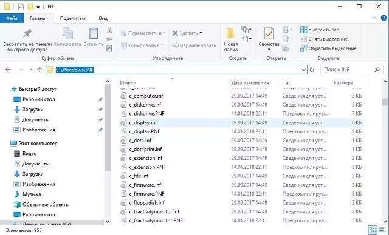
Как Windows управляет программами?
Если программа установлена, мы подразумеваем, что её остов где-то хранится. Чаще всего это жёсткий диск или флешка. Когда пользователь запускает программу, некоторые из её файлов копируются в оперативную память. Так появляется процесс. практически в том виде, каком мы видим его в Диспетчере задач или Process Explorer. Процессом можно назвать программу, запущенную вместе с соответствующими системными службами и другими ресурсами. Ресурсы нередко включают в себя и другие программы, включая захват дополнительных ячеек оперативной памяти для временного хранения данных. Когда процесс делает запрос к системе по типу “Мне нужны ресурсы!”, подразумевается, что программа обращается именно к подсистеме Win32. Так появляется поток данных. Поток – это единичная, выделенная задача (запустить или создать документ, вставить рисунок из буфера обмена, распечатать документ на принтере и т.д.)
Как видите, потоков может быть несколько. Это называется многопоточность/мультипоточность: например, окна браузеров могут запускаться в нескольких вкладках или нескольких отдельных окнах. Выражаясь технически, в обоих случаях речь идёт о нескольких разных процессах браузер.exe.

Не, чёта не хочу пока.